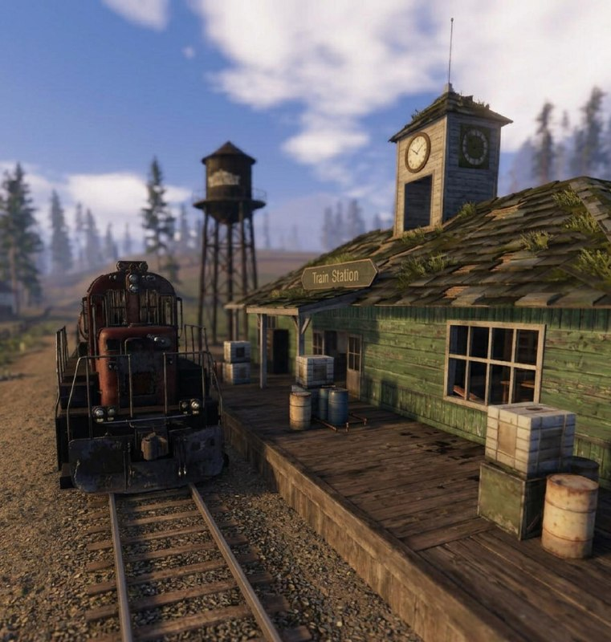

Bahnhof
Ein großer Eisenbahnstandort, der für seine umstrittene wertvolle Beute bekannt ist.

Aktivitäten
Durchsuchen Sie die Gleise nach Zügen. Jeder kann mit Treibstoffflaschen fahren und beide Laderäume sind unverschlossen.
Ertrag
Die Station verfügt über wertvolle Beute; Es lohnt sich, die Zugfracht zu überprüfen, aber Züge erscheinen nicht an einem festen Bahnhofspunkt.
Risiken
Erwarten Sie Spielerkämpfe. Durch fahrende Züge können Menschen auf den Gleisen verletzt werden, da dort Bauverbot besteht.
Recycler
Zum Recyceln kannst du zur Tankstelle, zum Parkplatz, in die Stadt, zum Lagerhaus, zum Holzfäller oder zum Bergarbeiter gehen.